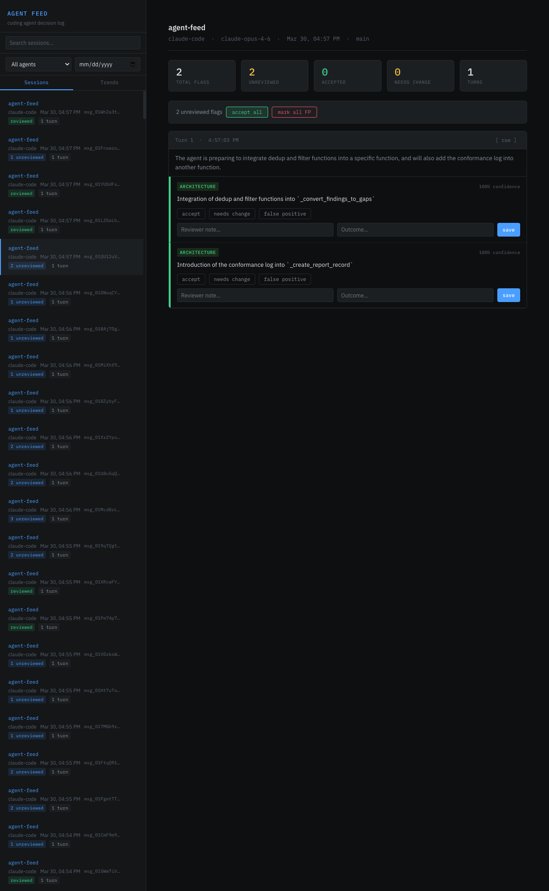
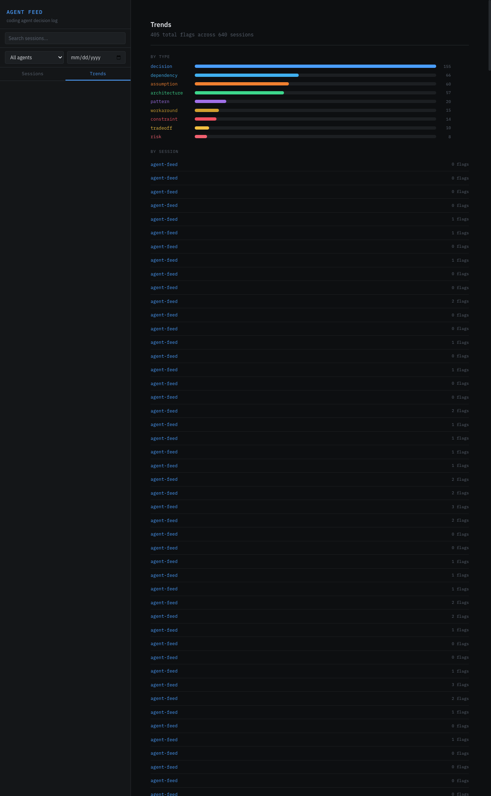
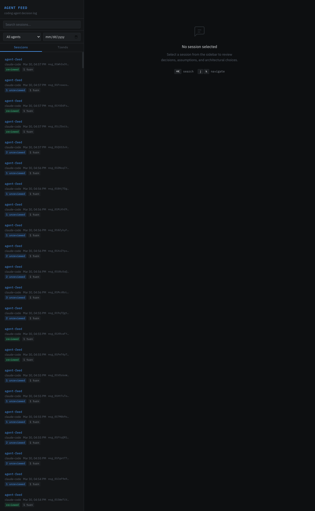

Agent Feed captures every decision, assumption, and risk your AI coding agents make — and surfaces them for review before they become technical debt.

The visibility gap
Agents choose between approaches, pick defaults, apply patterns. None of this appears in the diff. You review the output without seeing the reasoning.
A new library gets pulled in because the agent thought it was the right call. You find out during deploy — or worse, in production.
“For now I’ll use string concatenation” — temporary code that becomes permanent because nobody saw it happen.
How it works
Agent Feed is a transparent proxy. Set one environment variable — your agents route through it without any changes to their setup.
Every API response from Claude Code, Codex, or Gemini passes through the proxy unmodified. Agents that emit OpenTelemetry (Claude, Gemini) also send tool decisions, hook events, and MCP lifecycle to a local receiver — signals the proxy can’t see.
env vars + optional OTel exporterA secondary LLM reads each response and extracts structured flags: decisions, assumptions, architecture choices, workarounds, risks, dependencies, and more. Nine types total.
async — never blocks the agentAfter a session, open the dashboard. Walk through each flagged item chronologically. Accept what looks right, flag what needs attention, mark false positives to improve the classifier.
local — no cloud, no telemetryClassification
Each response is analyzed and tagged. These aren’t vague sentiments — they’re specific, reviewable items with confidence scores.
The interface
Walk through each flagged item in order. Accept, flag for changes, or mark false positives. Every review action trains the classifier.

Spot patterns across sessions. Rising workaround rates. Recurring wrong assumptions. Measure whether prompts are improving over time.

Every agent session captured with flag counts, agent type, and git context. Filter by agent, date, or repository.
Use cases
Before reviewing a PR, pull up the session. Know what was decided — what alternatives were considered, what was assumed — before reading the code.
When developers use agents, you lose visibility into what the agent decided on their behalf. Agent Feed creates the audit trail without adding documentation burden.
Trends reveal which prompts produce workarounds, which tasks generate wrong assumptions. Fix the inputs, not the outputs.
Built-in eval framework measures precision and recall per flag type. Your review actions become ground truth automatically.
Get started
git clone https://github.com/starfysh-tech/agent-feed cd agent-feed && npm install && npm link agent-feed start # That's it. Your agents now route through the proxy.
Works with Claude Code, Codex, and Gemini. Requires Node.js 20+. All data stays local in ~/.agent-feed/.
Under the hood
agent-feed start verifies the daemon is actually serving requests via /api/health before reporting success; on failure, env vars are cleared so coding agents fall through to direct upstream rather than hanging.